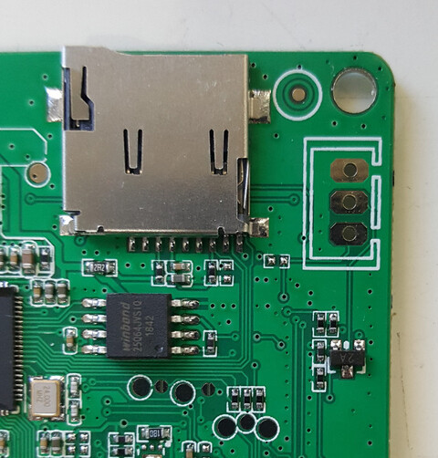
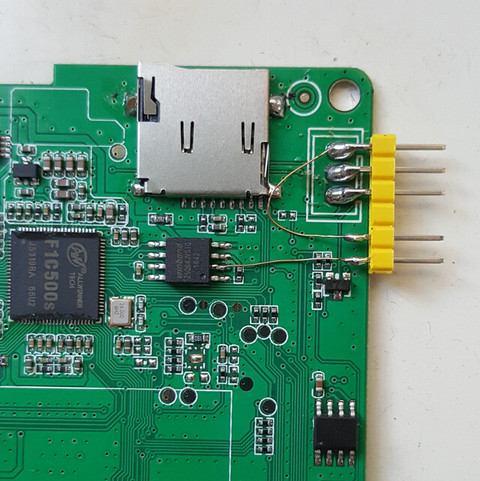
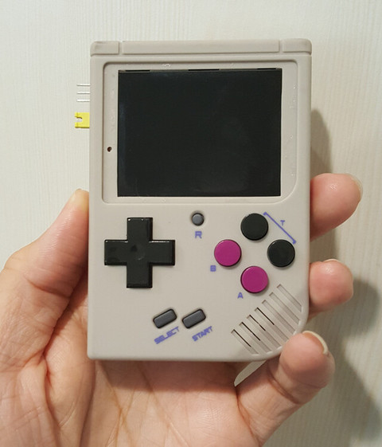
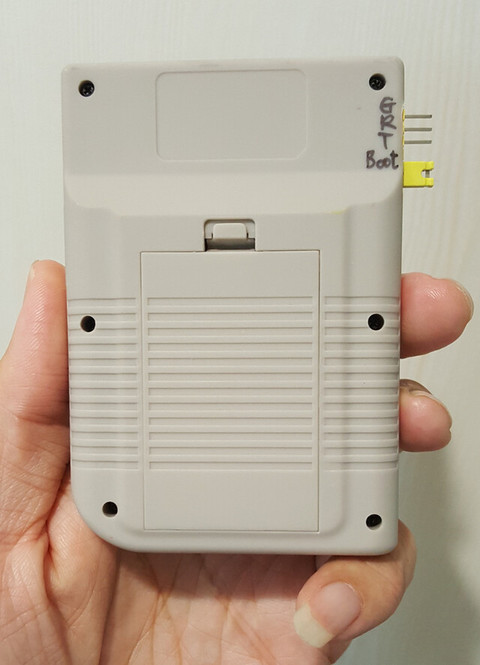
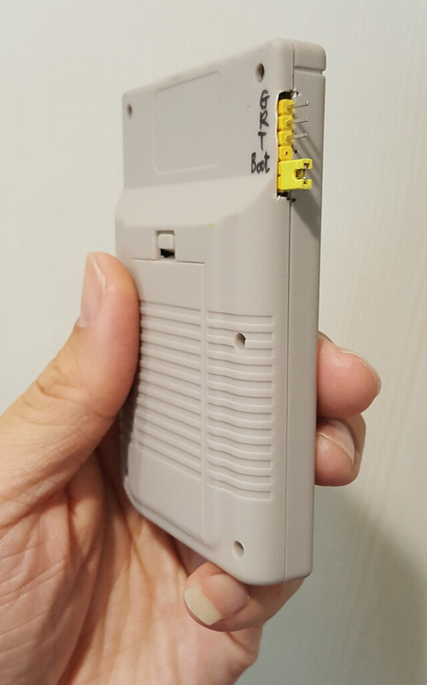
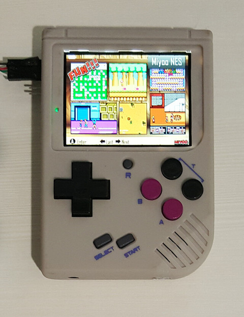

Steward
分享是一種喜悅、更是一種幸福
掌機 - Miyoo - 焊接UART接頭
廠商真是貼心，特別把GND、UART1 RX、UART1 TX(由上而下)拉出來，提供開發者一個友好的開發界面

F1C500S的開機順序是：MicroSD、SPI Flash、USB，因此，只要MicroSD有SPL程式(在8K位置)，F1C500S就會從MicroSD載入SPL並啟動，因此，為了測試SPI的UBoot程式，司徒特意把SPI Flash(Pin2)拉出來，在沒有MicroSD的情況下，只要短路Pin2，就會進入USB模式，方便燒錄測試程式

正面

背面

側邊

測試UART輸出

Baudrate 115200bps
BOOT0 is starting init dram , base is 0x80000000 init dram , clk is 168 init dram , access_mode is 1 init dram , cs_num is 0x00000001 init dram , ddr8_remap is 0 init dram , sdr_ddr is 1 init dram , bwidth is 16 init dram , col_width is 10 init dram , row_width is 13 init dram , bank_size is 4 init dram , cas is 3 init dram , size is 120 dram init successed,size is 32 jump to BOOT1 DBG: boot1 starting! 0 jump to kernal Mount Parts Thread running..... partition [D] plug in.. Mount Parts Thread work now..... Mount Parts Thread work end.... **********************game start********************************* --1 0x00 = 0x0 -- --1 0x04 = 0x0 -- --1 0x08 = 0x0 -- --2 0x00 = 0x0 -- --2 0x04 = 0x0 -- --2 0x08 = 0x0 -- **********************logo start****************c2625800***************** **********************logo eng****************c2625800******************* *divider=49 b_interlace=0 =================LCD_open_cmd===================== =======lcd ID = 0x0====== LCD_BOOT: wait to power on!!!!!!!!!!!!!!!!!!!!!!!!!!!!! LCD_BOOT: disable auto mode for setting!!!!!!!!!!!!!!!! LCD_BOOT: id to read back is 0 =================lcd_cpu_cmdset===================== LCD_BOOT: lcd_cpu_cmdset!!!!!!!!!!!!!!!!!!!!!!!!!!!!! LCD_BOOT: LCD_CPU_WR_INDEX!!!!!!!!!!!!!!!!!!!!!!!!!!!!! LCD_BOOT: LCD_CPU_AUTO_FLUSH !!!!!!!!!!!!!!!!!!!!!!!!!!!!! **********************mymeminit********************************** ++++++++++++++++++++++memory init start++++++++++++++++++++++++++++++++++ ++++++++++++++++++++++memory init end++++++++++++++++++++++++++++++++++ **********************sdio init********************************* SDC 0 init... SD card found SDC 0 identified successfully sdcard device name: SDMMC-DISK:0 Mount Parts Thread work now..... p1 p1 __file_path=c29a3000 partition [F] plug in.. Mount Parts Thread work end.... __file_path=c2a03ce0 __file_path=c2a649c0 **********************game_menu start*********************************